湖南，风风雨雨的湖南！
追寻梦中的诗和远方 2018-10-15 20:37:14
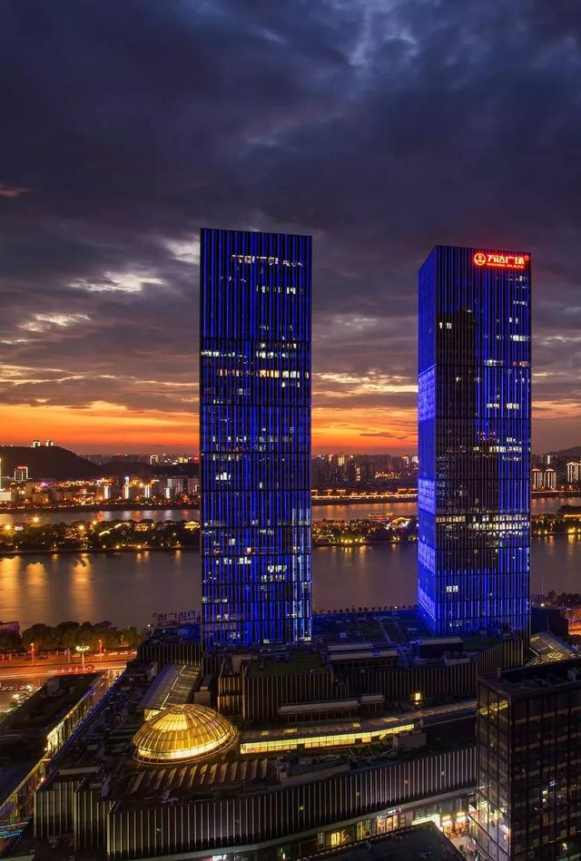
呷得苦，耐得烦，霸得蛮
风风雨雨老湖南
— 湖南 · 2018 —
在中华民族漫长的历史进程中，湖南在很长一段时间内并不出彩。
在中原人的眼中，这里是南蛮之地，流放之所。
当时间进入近代，摆在湖南人面前首要的任务就是，建设一个新湖南。
▼ 湖南位置示意图，同一经度上，邻省广东、湖北经济都要优于湖南，同纬度的江西在古代人才优于湖南
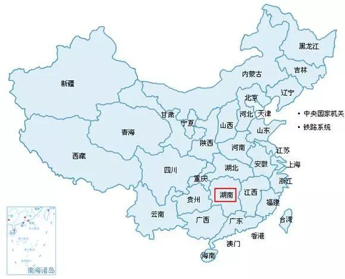
近代湖南也没使人失望，从鸦片战争开始，在这短短两百年间，湖南人才辈出，搅动风云，甚至一度超越北京，成为影响全国格局的重要力量。
那么，究竟是什么原因，使默默无闻的湖南强势崛起，以锐不可当之势，成为近代史上最耀眼的省份之一呢？
Ⅰ 过去
从史料记载算起，湖南并不出彩。
贾谊被派作长沙王太傅，便“闻长沙卑湿，自以为寿不得长”；
柳宗元被贬往永州，只好游山玩水派遣忧愁；
八百里洞庭声闻天下，然而《岳阳楼记》开篇便是“滕子京谪守巴陵郡”，在很长一段时间内，中原士子看待湖南，眼里满满都是嫌弃。
湖南与外部世界的联系，被大山隔绝，大江阻断。
它东以幕阜、武功诸山与江西为界，南枕南岭隔绝广东广西，西以雪岭山脉直攀云贵高原。
三面已被大山阻隔，只剩北方可上中原。
然而八百里洞庭横亘北方，湘、资、沅、澧切割陆地，在交通并不发达的古代，湖南堪称与世隔绝。
▼ 洞庭湖，古称云梦泽，昔日号称八百里洞庭，为中国第一大淡水湖。20世纪以来不断的填湖运动，使其面积缩小至2579平方公里，错失第一大淡水湖宝座。
大山大川留下无尽传说，将这遗世独立的大省，造就得神秘非常。
舜帝南巡崩于苍梧，回葬于九嶷。
这里峰峦叠峙，深邃幽奇，千米以上高峰有90多处，云蒸霞蔚里，全然一派仙家景象。
▼ 永州境内九嶷山，传说为舜帝葬所
武陵人溪行遇桃源，阡陌交通，鸡犬相闻，袅袅炊烟秋风中，一片天堂乐土坠落人间。
▼ 常德市桃源县，陶渊明《桃花源记》中原型
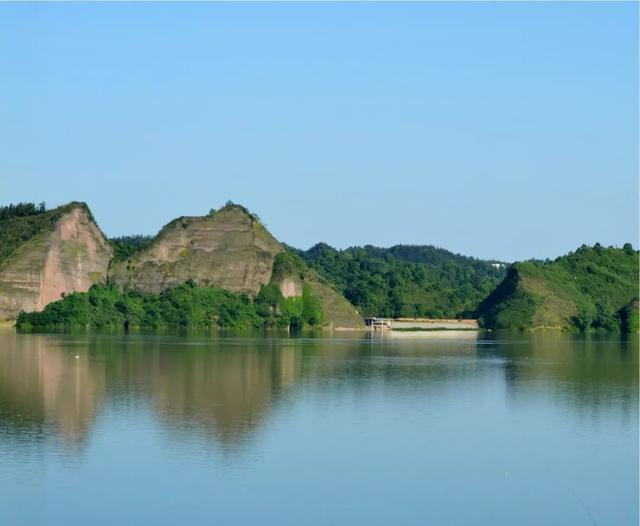
祝融修道登南岳，青松古杉中，青瓦白墙下，自是一片梵音缥缈。
▼ 南岳衡山，顶峰祝融峰高1300米
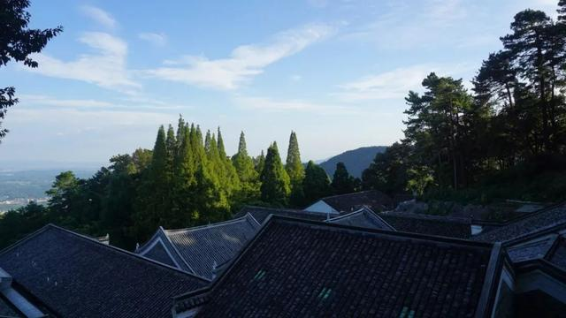
炎帝种茶在茶陵，青山绿水间，藏纳一个万世炎陵。
▼ 炎陵县炎帝陵，“炎帝崩葬长沙茶乡之尾，是曰茶陵”
天门山、芙蓉镇、东江湖，有太多的动人传说，藏在这片山水深处。
但世之奇伟瑰怪非常之观，常在于险远。
幽静的大山，壮阔的大河，对于古人来说却是难以跨越的天险。
在过去，处在山水深处的湖南人才凋敝，甚至许多士子因交通不便，终生不见场屋。
▼ 洞庭湖
词语“破天荒”的来源，便是因为荆南士子刘蜕府解及第，破了“天荒”，因为自科举考试设立之始，湖南就少有人中第。
王昌龄，柳宗元，刘禹锡，苏辙，欧阳修都被贬到湖南，古人对湖南避之不及，连诗圣老杜都在此喟然长叹，亲朋无一字，老病有孤舟！
Ⅱ 发展
既然被士子嫌弃，外部人才进不来，湖南便只能靠自身发展。
长期与中原隔绝，湖南产生了独特的楚地文化，其中最具代表性的，便是“楚辞”。
灵秀的山川，神秘的巫觋文化，造就了富于浪漫精神的湖南人。
在屈原笔下，灵山大川一草一木无不成文。
▼ 今日湘江。“湘”字是楚辞中出现最多的字眼之一，后演变成湖南简称。
灵秀山川，楚地文化，又赋予了湖南人勇于探索的精神。
在长期与自然斗争的过程中，湖南人养成了“呷得苦，霸得蛮，耐得烦”的“湖南性格”。
吃苦耐劳勇于探索的湖南人，一直在等待一个时机。
当外部条件成熟，湖南的发展必然如天雷勾地火一般，势不可挡。
这个时机在晚清出现了。
首先是湖南人的尚武基因发生了作用。
先是曾国藩组建“湘军”，将太平天国轰出三界外。
自这时起，湘人开始走出湖南，走向朝堂，在全国的政治舞台上，发挥重要作用。
▼ 曾国藩
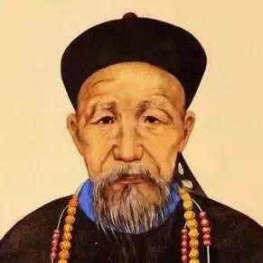
据统计，在战争之后，湘人因军功而居游击以上武职者，多达6319人。
其中提督478人，总兵1077人，副将1534人，参将1434人。
这在全国各省都是绝无仅有的。
抗日战争中，湖南作为重要战略阵地，牺牲最为惨烈，抵抗也最为坚决。
在16次重要战役中，有6次发生在湖南。
常德会战中，57师8000壮士战至最后一兵一卒；
衡阳保卫战中，第10军坚守孤城47天，在千里大溃的湘桂战场犹如擎天一柱。
在湖南大地上发生的场场战役，都烙印进了湖南人的血脉基因里。
▼ 长沙烈士公园纪念塔
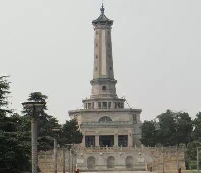
湖南的发展也得益于
交通的改变。
20世纪末，张之洞提议修建一条从广州到武昌的铁路，谭嗣同等人看到机会，大力宣扬取道湖南的好处。
在此之前，北方直达广东的交通，一般借道江西，湖南也在近千年的时间内，看着同一纬度的邻居成为江南粮仓，而自己却是苦哈哈的贬谪之地。
▼ 衡阳火车站
粤汉铁路建成，湖南成为最大受益者，武汉的工业，广州的贸易都让湖南受益不浅。
直到建国之后，湖南一直都重视铁路的发展，全国六个“火车拖来的城市”，湖南占据其二。
另一方面是水上交通的完善。
湖南河网密布，长度5公里以上的河流达到5431条，水文总长超过9万千米。
从20世纪末开始，湖南各地就开始了频繁的水上贸易，茶陵的茶，常德的油布，都沿着纵横的河网，进入长江，直销中南诸省。
于是许多依水而建的古镇渐渐繁荣起来，比如沱水之旁的凤凰古镇；
酉水之旁的芙蓉镇；
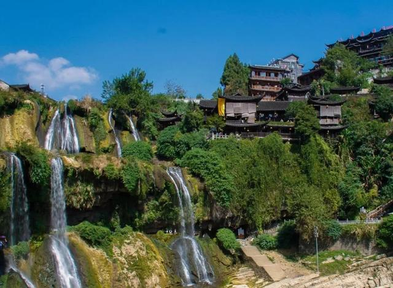
谢沐河畔的上甘棠。
对湖南发展贡献最大的，恐怕还是教育。
在古代，湖南人能登庙堂者，寥若晨星。
《二十四史》中记载的中国名人，湖南仅占0.9%；
《中国历代名人词典》中记载者有3755人，湖南仅有23人，也不足1%。
然而近300年来，湖南忽如睡狮梦醒，湖南人突然崛起，在政治、军事、文艺等领域异军突起，名冠中华。
魏源提出“师夷长技以制夷”，放眼看世界；
饱受争议的郭嵩焘治学“思贤讲舍”，首次将数学、科学引入教学大纲；
谭嗣同创立浏阳算学社，正是有了这一批人的努力，才有了后来欣欣向荣的人才复兴。
▼ 谭嗣同故居
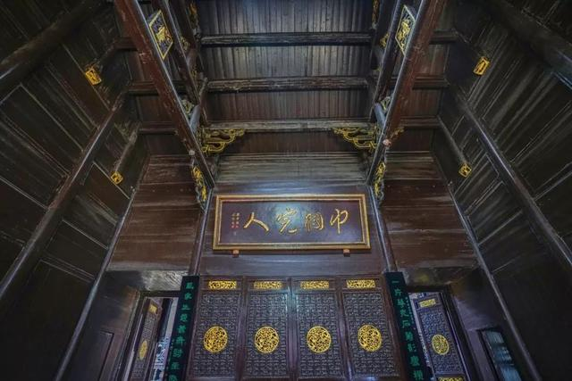
湖南教育最出彩的，要数第一师范了。
这一所学校汇聚徐特立、杨昌济等名师，又培养出毛泽东、蔡和森、任弼时等高徒。
▼ 第一师范一角
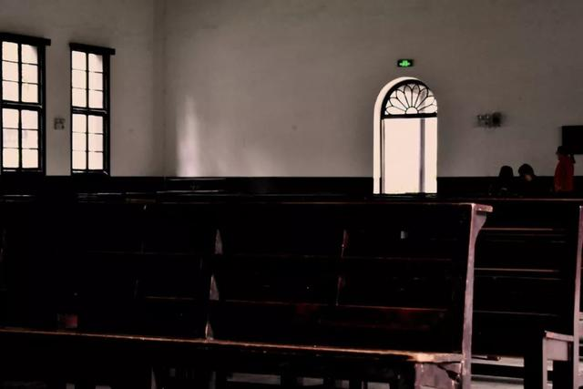
在新民族主义革命的践行者当中，毛泽东、刘少奇、彭德怀、贺龙、罗荣桓都来自湖南。
新中国第一次授衔，十大元帅中，湖南籍占30%，十位大将中湖南又占了6位。
57名上将中，湖南籍有19人；
176名中将中，湖南人占45人。
著名历史学家谭其骧感叹：
清季以来，湖南人才辈出，功业之盛，举世无出其右。
至此，一个昂首向前的湖南，正式呈现在世人面前。
而今，湖南大学、中南大学、国防科技大学相继落户湖南，一个活力湖南，也正向我们走来。
Ⅲ 未来
但是，曾经的辉煌不代表未来的强势。
和全中国所有省份一样，湖南现在最大的矛盾在于，中心城市与边缘地区的严重失衡。
我国贫富差异最大的，不是蒸蒸日上的东部与地广人稀的西部，也不是光怪陆离的城市与朴实的乡村，而是省核心地区与边缘地带。
▼ 我国各地区贫富差异比，数据来自《中国国家地理》
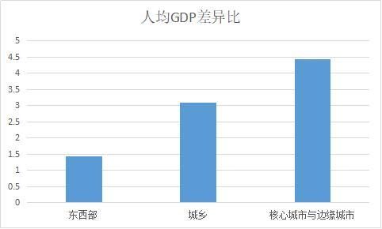
中国的省界，大都依据山河而定，这些山川成了人们与外界联系的障碍。
在几省交界处，往往风光旖旎，但却极度贫困。
以湖南为例，它与广东、广西、江西、贵州、重庆、湖北都有交界，阻隔在这些地方的，便是南岭、武陵山脉、
雪峰山脉、八百里洞庭。
这些地方，或者崇山峻岭、音尘隔绝；
▼ 邵阳附近之崀山，这里风光秀丽非常，仅发现和命名的景点就达500多处。
或者庭院深深，门庭寂寥；
▼ 永州柏家坪
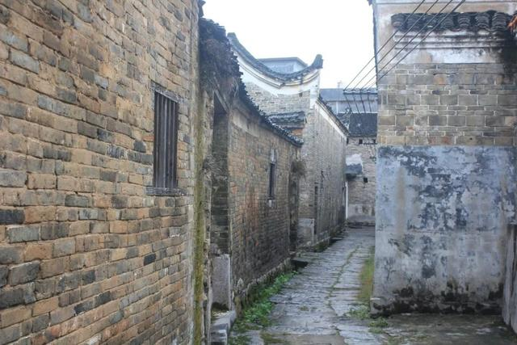
或者风割水蚀，奇特山峰如插天利剑，气势巍峨；
▼ 张家界，因为深处湘西大山深处，张家界直到1979年才因为吴冠中的画作，被世界熟知。但也因此，它保留了完整的石英砂岩地貌。
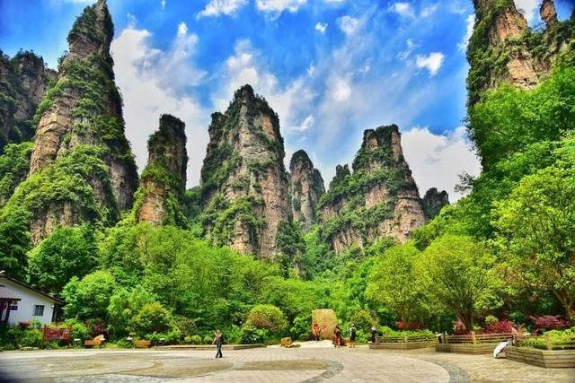
或者道路蜿蜒，盘山公路犹如九曲十八弯
▼ 天门山九十九道弯
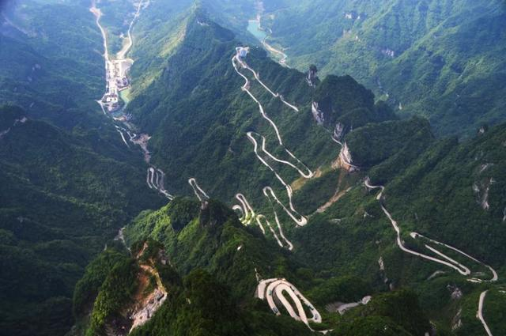
或者云雾缥缈，游之如入原始世界。
▼ 资兴东江湖，湖南唯一拥有5A景区，国家生态区等6个称号的“六位一体”旅游区。原先的晨雾捕鱼景观颇具韵味，现已取消。

这些省界边缘地带，风光旖旎自然，同时也创造了贫穷。
即使靠旅游收入，边缘地带与省会的差距，也可能以十倍计算。
▼ 2017长沙与张家界GDP总量对比，长沙为10535.51亿元，突破万元大关，而张家界仅为542.41亿元，差不多是长沙的零头。
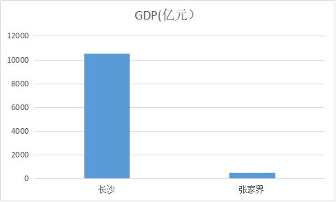
而矛盾在于，越是贫穷，人才越是流失。
中心地带越来越富，而边缘地带越来越穷
▼ 湘西州，尽管湘西州在大力开发旅游，但依旧没能摆脱贫困。湖南11个深度贫困县中，湘西州占了7个。
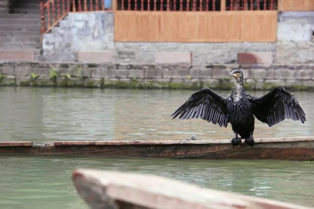
目前，湖南的城市建设，形成典范的有两种模式。
第一种是“长株潭”模式。
长沙、株洲、湘潭地处湖南东部，这里既无长三角之地理优势，又无珠三角的经济优势，于是湖南人便自造一个“长株潭”经济带。
长沙的高新科技、株洲的交通运输、湘潭的精细化工等三位一体，共同打造一个“中部引擎”。
▼ 长沙三汊矶大桥
至于长株潭一体化的效果，一直以来也饱受争议。
一方面，省会长沙的GDP在2017年突破了万亿大关，另一方面，株洲却从2011年的第3位掉到了2017年的第5位，湘潭则直接从第2掉到了第7。
湖南城市建设的第二种典范是“常德模式”。
常德地处湖南西北，严重脱离京广线，直到1998年才开通第一条铁路。
可以说，常德的铁路交通落后京广线80年。
▼ 常德小河街夜景
然而常德却在种种桎梏中异军突起，一方面，它大力发展新兴工业，铝材、钛材、二代光纤、石墨烯全产业链等齐头并进，又大刀阔斧建设绿色城市，发展工业的同时，也不丢弃农业发展，米业、烟草都闻名全国。
20年内，常德华丽转身，GDP攀升至湖南第三，更是贡献了湖南1/4的工业利税。
未来湖南如何发展，是继续倾斜向核心城市，还是均衡发展，或者有计划的配置资源，还有待人们的探索。
也许，只有当资源、
人才、制度找到一个平衡点，湖南才能成为真正意义上的“中部引擎”。